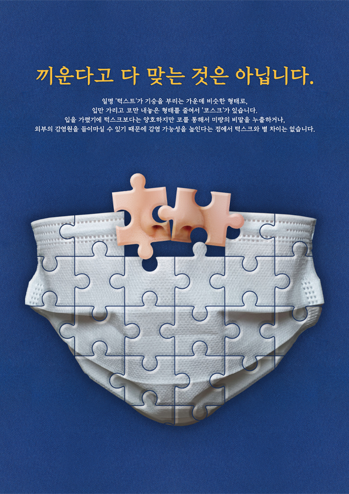
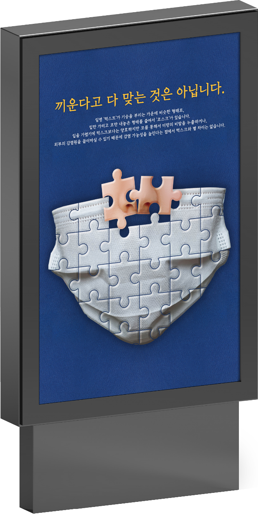
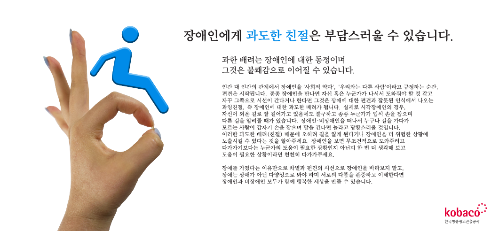
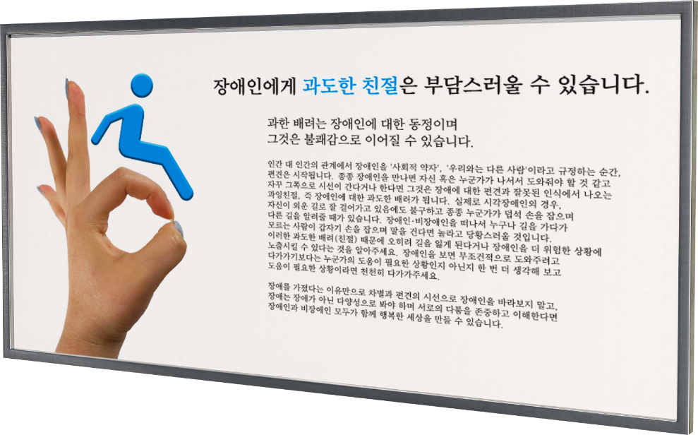

작업기간 2021년 9월 ~ 2021년 10월 사용 프로그램Photoshop / Indesign
Overview
코로나19 이후로 마스크 착용이 의무화가 된 이후로 길거리에서
종종 목격되던 턱스크, 코스크를 비판하는 내용의 공익광고입니다.


Design Concept
전체적인 비주얼 이미지를 퍼즐에 비유하여 제작하였습니다.
코스크의 형태를 표현하기 위하여
마스크의 코 부분은 맞지 않는 퍼즐로 구성하였습니다.
따라서, 맞지않는 퍼즐을 억지로 끼워맞춘다고 해서
퍼즐이 완성되는 것이 아닌 것 처럼 마스크를 턱에만 걸치거나,
코 끝을 노출하여 착용한다면 그것은 절대 마스크를 착용했다고
볼 수 없는 것이라는 의미를 담고 있습니다.
Advertising Design 장애인에게 과잉친절이란?

About
작업기간 2021년 9월 ~ 2021년 10월 사용 프로그램Photoshop / Indesign
Overview
장애인에게 부담스럽게 느껴질 수도 있는 과잉친절을 주제로
공익광고를 제작하였습니다.

Design Concept
기존의 장애인 기호는 휠체어를 탄 사람을 형상화한 기호로,
과도한 친절이 부담스러울 수 있는 장애인의 입장에서 괜찮다는
의미를 전달하기 위해 휠체어 모양을 대신하여 OK 제스처로 바꾸어주었습니다.